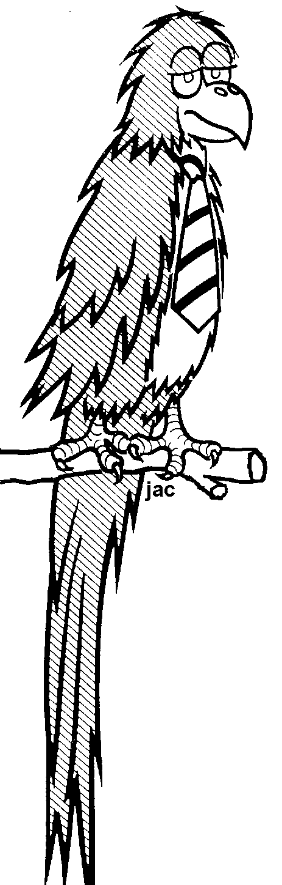

|  |
The Tessellation Doodle ProgramHere is a small program that is a lot of fun. This screen shot shows you the idea- when you drag the mouse while holding the left button down, filled circles will be drawn simultaneously in three colors of your choice. They are drawn not just in the spot you have the mouse, but in a hexagonal pattern such that they tile or fill the plane. As you move the mouse you will see that as you go beyond the immediate area the circles overwrite previously drawn colored areas. That ensures that the tiles are alike, and arranged such that the plane is perfectly tiled. It is fun to make patterns that have a symmetry pleasing to the eye. It is hard to make the tiles look like faces or animals, but possible. I've made this downloadable. Download JacTess.exeHome Page | A Quiz and Solitaire Game | Puzzle Learning Card Maker | A Quiz Jigsaw Program |